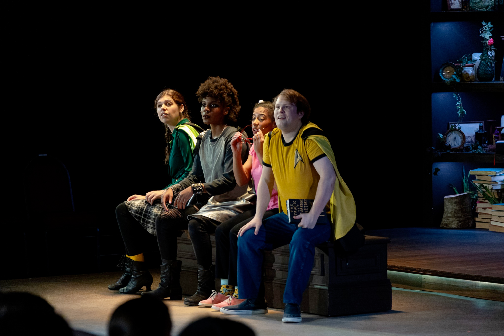
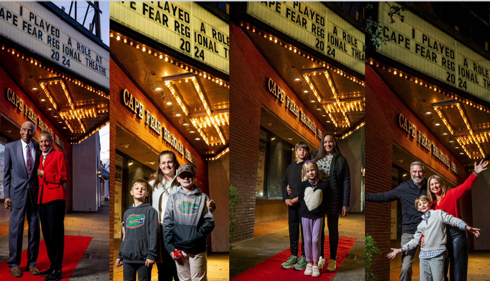
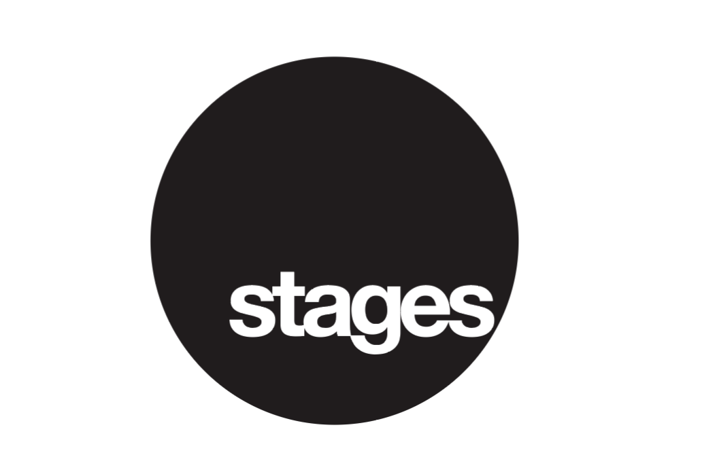
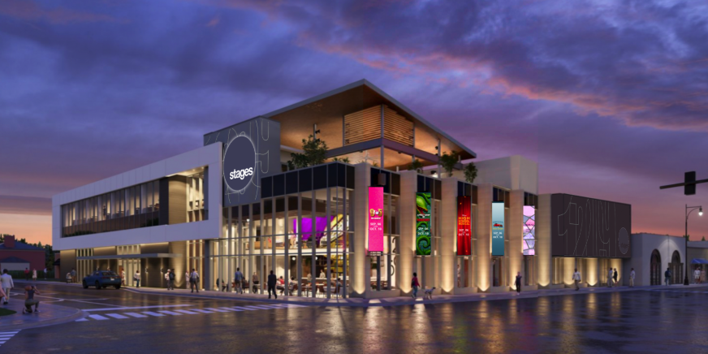

A Name For Every Stage Of Growth
How does a regional theater in rural North Carolina scale its revenue to support a $25 million expansion? This is the question Cape Fear Regional Theater, which consistently rivaled bigger hubs like Raleigh and Durham, came to us with. Not only did it have a location-bound name that kept them feeling small, but it also had a linear way to bring in profits that kept them too reliant on donations.

In a modern entertainment market driven by multi-experience spaces like food halls and pop-up venues, the theater needed to redefine what it offered. They had already built trust in their artistic excellence; now they needed to leverage that existing trust into becoming more than just a theater and, more so, a competitive entertainment destination. To support this shift and drive new revenue streams, we advised transforming the enlarged facility into a vibrant, multi-functional hub complete with an integrated bar, restaurant, and versatile event spaces capable of hosting year-round programming.

As we conducted interviews, we realized the brand’s true spirit lay in its deep generational roots. Local families grew up on these stages across every season of their lives. To break free from geographic limits, we shed the regional title and rebranded the institution as Stages. The name bridges the literal physical stage with the personal stages of life that every child, parent, and grandparent experiences within its walls. By framing the brand around lifelong artistic connection, Stages unlocked a scalable, modern identity capable of filling seats, expanding revenue, and anchoring the region’s cultural future.

